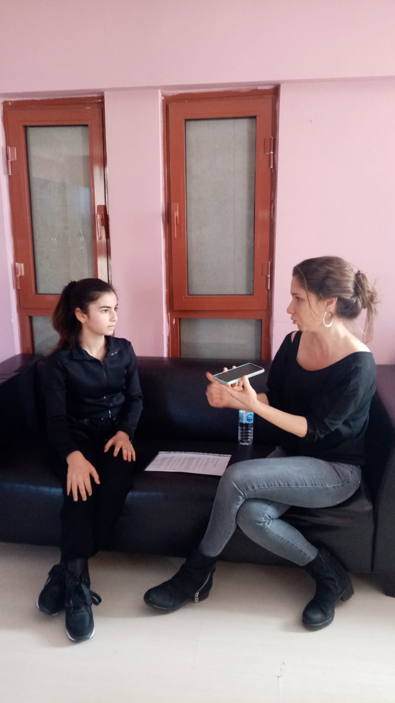
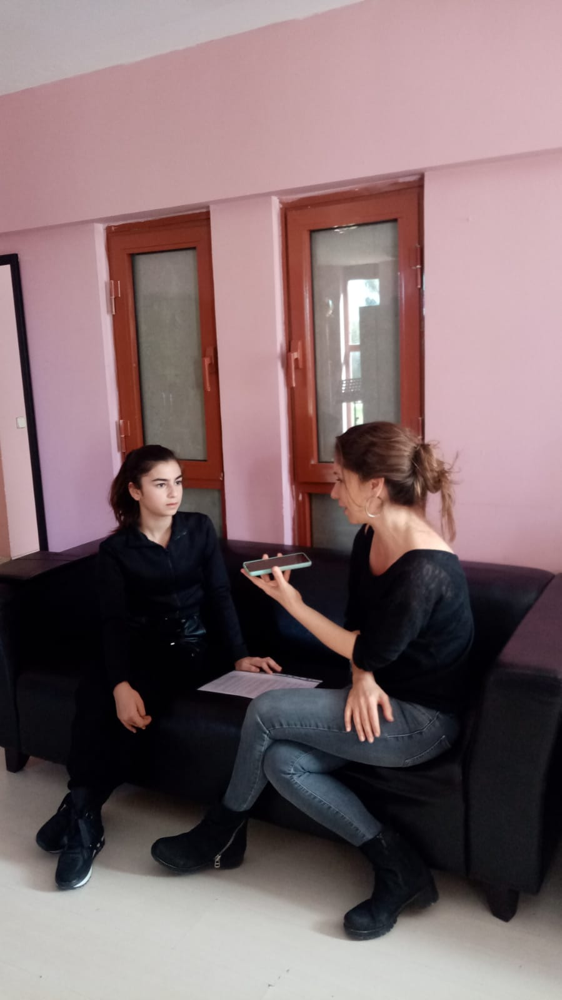
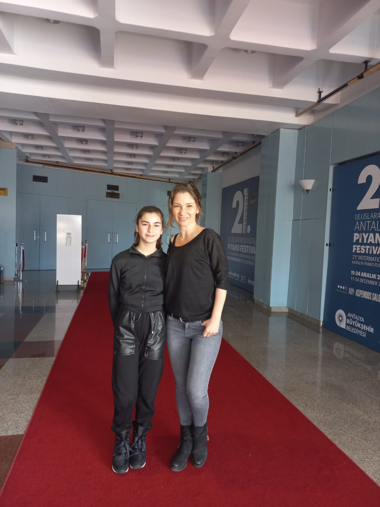

Bilge Nazlı
Bilge Nazlı-Şeniz Serter Röportajı 11 Mart 2022
Bilge NAZLI: Anadolu Üniversitesinde lisans eğitiminizi tamamladıktan sonra Moskova Çaykovski Konservatuvarına gitmeye nasıl karar verdiniz?
Şeniz SERTER: Moskova’da okumak benim hayalimdi. Çünkü Moskova bizim mesleğimiz açısından çok önemli bir yer ve çok önemli bir okul. Orada çok iyi hocalar var. Rusya’nın Moskova’nın çok önemli bir kültürü var. Orada olmak istedim. Daha önce giden arkadaşlarımın desteğiyle ve iletişim kurmasıyla oradaki hocalarla sınava girdim. Sınavı kazandıktan sonra orada çok iyi bir hoca olan Marina Hoca beni sınıfına kabul etti ve orada okumaya başladım. Altı sene orada okudum.
B.N: Yurt dışında yaşamanın/ keman eğitimi almanın zorlukları oldu mu?
Ş.S: Yurt dışında okumanın tabii ki zorlukları var. Moskova’da okumanın ayrıca bir zorluğu var. Eğitimin dışında orada yaşam çok zordu. Çok zor şartlarda eğitim gördük. Yani yaşam şartları değil, oranın kültürüne alışmak. Çünkü çok farklı. Her şey Türkiye’den çok başka. İnsanlar kültürel açıdan çok farklı. Bu farklılığın beni çok geliştirdiğini düşünüyorum. Rusya veya herhangi bir yer, neresi olursa olsun başka bir açıdan bakabilmek için herkesin yurt dışına gitmesi gerekiyor. Bu eğitim için olur, konser izlemek için olur gezmek için olur hiç önemli değil ama bakış açınızı geliştirmek için kesinlikle çok yararlı. Yurt dışına gittiğinizde başka bir dünyaya geçiyorsunuz, kesinlikle tavsiye ediyorum.
B.N: Rusya’da aldığınız eğitimle Türkiye’de aldığınız eğitim arasında kültürel ve eğitim anlamında ne gibi farklılıklar vardı?
Ş.S: İkisi de birbirinden çok farklıydı. Türkiye’de üniversite bitirdikten sonra Moskova’ya gittim. Burada güzel bir eğitim aldım. Anadolu Üniversitesi’nden iyi bir derecede, iyi bir seviyede mezun oldum. Fakat Rus ekolü farklı bir kültür, farklı bir teknik. Farklı bir ekol olduğu için abartmayayım ama neredeyse kemana yeniden başladım. Çünkü tekniği tamamen değiştiriyorlar. Bu iyi ya da kötü olduğu için değil ama ben orada okumayı tercih ettiğim için bana Rus ekolü üzerinden eğitim verdiler. Beni olduğum gibi değil o yön, o kültür üzerinden geliştirmek ve eğitmek istediler. Dolayısıyla bu 6 yıl boyunca bambaşka bir ekolle bambaşka bir eğitimle orada okudum.
B.N: 2013 senesinden beri Türkiye’nin tanınmış oda müziği topluluklarından birisi olan Nemeth Quartet’in 2. keman üyesisiniz ve iyi anlaştığınız 3 arkadaşınızla beraber oda müziği yapıyorsunuz. Aynı zamanda solo konserler de veriyorsunuz. En çok solo çalmayı mı, orkestrada çalmayı mı, yoksa oda müziğini icracılığını seviyorsunuz? Neden?
Ş.S: Ben her zaman başka biriyle müzik yapmayı tercih ediyorum. Solo çalmanın tadı ayrı, keyfi ayrı; orkestra eşliğinde çalsanız bile bir solist olarak sahnede yalnızsınız. Ancak Quartetle veya orkestrada çalarken diğer nefeslerle beraber iş yapıyoruz. Diğer çok sevdiğimiz arkadaşlarımızın olması, birlikte tını bulmaya çalışmak, birlikte müzik yapmanın tadı bambaşka. Yaptığımız iş çok zor bir iş. Çünkü dört farklı kafa, dört faklı fikir, dört farklı müzik, dört kadın. Beraber müzik yapmak her yönden çok zor aslında. Ama bunun tadı kesinlikle çok farklı. Tercih etmem gerekirse evet Quartet ya da oda müziğini tercih ederim. Ama hepsinin yeri bambaşka tabii ki.
B.N: Duo, trio, quartet çalmanın kendine göre zorlukları var. İyi bir oda müzikçisi veya iyi bir oda müziği topluluğu olmanın gerekleri nelerdir?
Ş.S: Cevabı o kadar uzun ki kısaca nasıl anlatabilirim diye düşünüyorum. Her şeyden önce müzisyenliğin, kemancılığın dışlında insanlıkla çok alakası var. Farketmeksizin quartet, duo, trio veya sekizlinin sabrı zorladığını düşünüyorum. Anlayış, öngörüler, hoşgörüler… Eğer bunları yapmazsak istediğimiz kadar iyi çalalım, karşı tarafla iletişimi iyi kuramazsak ne yazık ki istediğimiz sonuç elde edilmiyor. Yani çok iyi müzisyenleri bir araya topladığınızda her zaman en iyi sonuç çıkacak diye bir şey yok. Çünkü herkes çok baskın oluyor, çok farklı oluyor, sadece ben diyor. Biz burada hep karşımızdaki diyoruz. Herkes fikrini atıyor ortaya, ortak paydada buluşmak için herkesin fikrini deniyoruz. Yani bu olmadı, bu doğru, ben bunu istiyorum diye bir şey yok. Dolayısıyla karşınızdakine güvenmek gerekiyor. Nemeth Quartet olarak bunu yakaladığımızı düşünüyorum çünkü bu kadar yıl bir arada kalabilmek gerçekten zor. O yüzden her şeyden önce sabretmek ve karşındakinin fikirlerine saygı göstermek, anlayış bizi ayakta tutan şey.
B.N: Uluslararası ödüller alan Nemeth Quartet olarak örnek aldığınız oda müziği topluluğu var mıdır? Neden?
Ş.S: Tabii ki var. Çok fazla seçenek yok, kalıcı oda müziği grupları yok. Son zamanlarda hep değişen gruplar ve konser için toplanan müzisyenler oda müziği konserleri veriyorlar. Sürekli olarak oda müziği topluluğu olarak kalmak zor bir şey. Türkiye'de çok önemli bir Quartet olan Borusan Quartet kesinlikle bizim öncülerimiz. Her anlamda çok çalışkanlar ve hepsi çok iyi müzisyen, çok iyi işler çıkartıyorlar ve çok güzel işler yapıyorlar. Aslında biz de onlardan sonra bu işi yapabiliriz, biz neler yapabiliriz diye bu işe girdik. İyi ki de girmişiz. Yurt dışında tabi ki çok fazla grup var ama Borusan Quartet Türkiye için çok önemli bir grup, bizim öncümüz.
B.N: Konserlerinizde icra edeceğiniz eserleri seçerken dikkat ettiğiniz unsurlar var mı?
Ş:S: Onda da yine dört farklı fikir atılıyor ortaya. Herkes başka bir şey istiyor. Nasıl karar veriyoruz? Aslında daha çok Türk eserleri de olsun istiyoruz. Oğuzhan Balcı bizi her zaman destekleyen çok önemli bir Türk bestecimizdir. Bu akşam kendisinin düzenlediği Çanakkale Türküsü ’nü çalacağız. Ayrıca Yusuf Yalçın'ın Osmanlı ezgileri üzerine bizim için düzenlediği çok güzel süit seslendireceğiz. Genellikle bir büyük eser, bir romantik eser ve bir Türk ezgisi tercih ediyoruz. Klasik dönem olarak Beethoven ve Mozart’ın quartetleri çok eğiticidir. O yüzden programımızda Beethoven ve Türk eserleri ve bir tane de büyük bir romantik eser tercih ediyoruz.
B.N: CAKA’nın eğitimci kadrosundasınız ve hem yaz hem de kış kamplarında genç kemancılarla buluşuyorsunuz. Masterclaslardan farklı olarak CAKA kamplarının kazanımlarından bahseder misiniz?
Ş.S: Caka Türkiye için çok önemli bir oluşum. Cihat Aşkın Türkiye için yıllar önce çok güzel şeyler öngördü ve Türkiye'nin farklı bölgelerinde yaşayan çocuklara bir olanak sağlamak için böyle bir oluşum kurdu. Bu fikrini yaydı, bu oluşum büyük şehirlerde daha çok gelişerek, her sene yaz okulu ve kış okulu olarak düzenli olarak devam ediyor. Evet, ben de CAKA kurslarının bir üyesiydim. Kurslarda her sene farklı eğitimciler yer alıyor. Ben de yurt içinde ve yurt dışında görev aldım. Zaten Cihat Hoca aslında Türkiye'deki çocuklara gençlere her anlamda her zaman çok büyük destek. Bir tek büyük şehirlerde değil, belki doğuda, belki köylerde, küçük yerleşim yerlerinde müziğe ve bu enstrümanlara ulaşamayan yetenekli gençlere ulaşıyor. O kadar yetenekli çocuklar var ki işte Cihat Hoca bunları yakalayıp tutup kolundan çekip destekleyerek iyi yerlere gelmelerinde çok büyük rol oynuyor. O yüzden CAKA Türkiye’deki çocuklar ve gençler için gerçekten çok güzel ve önemli bir oluşum.
B.N: Son zamanlarda klasik müziğin konser salonlarından çıkıp sokağa ya da hangar gibi farklı mekânlara taşındığını görüyoruz. Siz bu konu hakkında ne düşünüyorsunuz? Türkiye’de klasik müziğin halka daha fazla ulaşması için yeni bir yol olabileceğine katılır mısınız?
Ş.S: Kesinlikle katılırım, çünkü Türkiye’de klasik müzik yapmak çok kolay bir iş değil. Herkese klasik müziği dinletemiyorsunuz. Yolda giderken klasik müzik duymak çok zor ya da duysanız da anlamayan ya da bunu bilmeyen birisi farkına varmıyor. Bu müziğe gerçekten dinleyerek alışıyor insanlar. O yüzden biz de programlarımızı bu yönde seçmeye çalışıyoruz. Ağır klasik müzik eserleri de seçiyoruz ama onun dışında programlarımızda Türk ezgilerine de yer veriyoruz. Konserlerde genelde bir Türk ezgisi aranıyor; hani bir kulağa aşinalık olsun, bir tanıdık ezgi olsun, belki bir Türk düzenlemesi belki başka bir şey. Sadece konser salonlarına bağlı kalınması çok doğru mu dersek açık hava festival konserleri olabilir. Almanya'da açık havada çimlerin üzerinde, herkes içeceğini yanına almış, yerini almış çok büyük konserler etkinlikleri yapılıyor. Keşke Türkiye'de de bu tarz etkinlikler yapılsa. İnsanlar da alışır böylece. Talep çoğaldıkça biz de klasik müziğe çok kolay ulaşırız. Şu anda konser vermek, salon bulmak, salon aramak konularında sadece klasik müzik için olan konser salonlarında bile başka müzikler de olsa sadece klasik müzik olmasa talepleri geliyor. O yüzden biraz da halkın kulağını oluşturarak talebi artırmak bizim için daha iyi olur diye düşünüyorum.
B.N: Türkiye klasik müzik ve kemanın durumu hakkındaki izlenimleriniz nelerdir?
Ş.S: Dediğim gibi halkı klasik müziğe tanıdık ezgilerle ama bir yandan da gerçekten klasik müzik de çalarak alıştırmak gerekiyor. Klasik müziği tanıtmak gerekiyor. Yani halk bilmediğinde bilmediği şeyi sevmediğini düşünüyor. Dolayısıyla ilk başta klasik müziği güzel ve kaliteli bir şekilde sunarak onların beğenisini sağlamak gerekiyor. Bu durumda kaliteyi de çok düşürmeden iyi bir seviyede eğer konserler devam ederse Türkiye’de klasik müzik anlayışının değişeceğini düşünüyorum.

B.N: Günümüzde artık birçok kemancının en zor eserleri bile çalabildiğini görüyoruz. Sizce fark yaratmak, bir adım öne çıkmak için yapılması gerekenler nedir?
Ş.S: Tabi ki çalışmak. Yani bunun tek cevabı bu değil. Çalışmak kesinlikle ilk yapılması gereken şey. Çalışmanın dışında, doğru çalışmak, nasıl çalışacağını bilmek yani her zaman saatlerce çalışmak değil. Ne yapacağını bilerek kararlı bir şekilde çalışmayı yönlendirmek gerekiyor. Onun dışında biraz araştırmak ve dinlemek gerekiyor. Şu an o kadar büyük imkânlar var ki, internet üzerinden dünyanın her yerine her kayda kolaylıkla ulaşabiliyoruz. O yüzden notalar olsun, kayıtlar olsun ve çeşitli müzisyenlerin farklı kayıtları farklı yorumlarını dinleyerek bakış açısını değiştirebiliyor insan. Bizim işimizde ne yazık ki iki kere iki dört eder diye kesin kurallar yok. O yüzden biraz daha seçenekleri arttırmanın, fikirleri geliştirmenin, bakış açısını değiştirmenin yoruma katkıda bulunacağını düşünüyorum.
B.N: Sizce 50 yıl sonra kemanın sesi değişir mi? Teknoloji Kemanı nasıl etkiler?
Ş.S: Teknoloji o kadar hızlı ilerliyor ki korkuyorum. Şu anda tabii ki değişmeyeceğini düşünüyorum ama bu hıza baktığımız zaman evet bir şeyler değişecek çünkü şu an çağdaş müzikte o kadar yeni arayışlar var ki. Biz şu an klasik müzik diyoruz ama klasik müziğe daha önceden klasik müzik denmiyordu. Şu anda bizim için klasik müzik oldu. Dolayısıyla şimdinin müziği ileride daha farklı olacak ve dediğim gibi 50 yıl sonra bambaşka bir noktaya gelecek. Yaptığımız müzik, teknolojik şeyler o kadar hızla gelişiyor ki evet galiba değişecek. Ama kim görecek bilmiyorum siz göreceksiniz galiba. Merakla bekliyoruz.
B.N: Artık en ulaşılmaz müzisyenlerin bile sosyal medyada provalarını, derslerini, sohbetlerini, günlük rutinlerini görebiliyoruz. Sizin sosyal medya kullanımı ile ilgili görüşleriniz nelerdir?
Ş.S: Sosyal medya şu dönemde ne yazık ki olmazsa olmazlarımızdan. Ama sosyal medyayı doğru kullanmak gerekiyor. Biraz önce söylediğim gibi her şeye internetten çok kolay ulaşılıyor, masterclasslar, müzisyenlerin bir dakika çektiği kısa videolar gibi… Biz 15-20 sene önce hiçbirine ulaşamıyorduk ve onlar bizim için ulaşılmazdı. Dünyada neler olduğunu bilenler bizim dönemde çok sınırlıydı. Fakat şu an her şey herkesin elinin altında. Bu çok büyük bir imkân, muhteşem bir şey. Sosyal medyayı doğru kullanmak gerekiyor kendi işimizde sosyal medyayı güzel kullandığımızı düşünüyorum. Çünkü tam quartete başladığımız dönemde sosyal medya daha yeni gelişmeye başlamıştı. Olduğumuz yerden Türkiye’ye ve dünyaya ulaşmak çok zordu. Şu an sosyal medya kendimizi tanıtmakta çok büyük bir araç oldu bizim için. Afişleri, konser programlarında kimin nerede ne çaldığını oradan takip ediyoruz. O yüzden dediğim gibi doğru kullanıldığında sosyal medya güzel bir şey
B.N: Genç kemancılar için tavsiyeleriniz nelerdir?
Ş.S: Ben de bir eğitmen olarak gençlerin bu müzikten, yaptıkları işten çok uzak kalmamalarını tavsiye ediyorum. Sadece derslere giderek, öğretmeninin söylediği birkaç parçayı çalışarak iterek, çekerek, nota ileri, gerinin dışına çıkarak biraz daha dünya görüşünü genişleterek bakış açılarını değiştirmelerini tavsiye ediyorum. Sadece enstrümancı, kemancı, piyanist viyolonselci değil, kendini sadece o alanda değil, daha fazla okuyarak araştırarak dinleyerek görerek kendilerini geliştirmelerini gerçekten çok gönülden istiyorum. Çünkü şu an her şey o kadar kolay ve ulaşılabilir ki ama ulaşılabilir olduğu için kimse ulaşmıyor ne yazık ki. Çünkü çok kolay. Nasıl olsa burada olduğunu biliyor herkes. Bizim için de aynı şey geçerli. Bazen evet biliyoruz burada olduğunu sonra bakarım diyerek erteliyoruz ama bakmıyoruz. Bu aslında kendimiz için, kendi başarımız kendi mutluluğumuz için. Ben her zaman şunu söylüyorum öğrencilerime başarmak insanı mutlu ediyor. Dolayısıyla çalışmak seni mutlu edecek. Çalışmak sadece iyi bir kemancı olmak değil. Seni mutlu edecek, senin özgüvenini sağlayacak, senin yolda yürüyüşünü değiştirecek belki. Yani bizim hayatımızı değiştiriyor bizim yaptığımız iş. O yüzden sadece tek taraflı kalmayıp sadece tek yönlü düşünmeyip, biraz daha araştırmak, dinlemek, görmek, konserlere gitmek gerekiyor. İmkanlarımızı kullanmak galiba en büyük tavsiyem.
B.N: 10 yıl sonra kendinizi nerede görmek isterdiniz? Hayalleriniz, dilekleriniz neler?
Ş.S: Aslında ben şu anda hayalimi gerçekleştiriyorum. Çünkü öğrenciliğimden beri hayalim bir quartet kurmaktı. Hep böyle sevdiğim müzisyen, iyi müzisyen arkadaşlarımla, sevdiğim insanlarla. Doğru anlaşabildiğim insanlarla müzik yapmak benim hayallimdi. 8 yıldır bunu gerçekleştiriyorum. Şu salonlarda konser vereyim, şu orkestra ile çalayım falan öyle bir hayalim yok. Ben sadece mutlu olduğum işi yapmak istiyorum. Keman çaldığım için çok mutluyum. Bu sayede sizlerle tanıştım, Antalya Senfoni Orkestrası ile ilk defa çaldım, tanımadığım insanlarla tanıştım, bir sürü arkadaşım oldu, yeni insanları görüyorum. Bunlar benim için o kadar büyük bir zenginlik ki... O yüzden ben iyi ki keman çalıyorum. Dünyada hadi gideyim göreyim diyeceğim birçok ülkeyi keman çalmayı sevdiğim için gördüm. Birçok şehre gittim. Ve bunlar benim için çok büyük bir kazanç. İşte bu yüzden diyorum mutlu olmakla eşdeğer aslında. Quartetle de çalışmadan ne buraya gelebilirdik ne başka bir yere gidebilirdik. Başarılı olmadığı zaman kimse de konser vermiyor. O yüzden mutlu olduğun işi yapmak tavsiyelerimden bir tanesi. Umarım siz de istediğiniz gibi istediğiniz yerde çalarsınız, çalışırsınız ve mutlu olursunuz.
B.N: B.N: Röportajımız için çok teşekkür ederim.
Ş.S: Ben teşekkür ederim bu güzel sorular için.
Ezgi Su ALTAN'ın Aralık 2021 de gerçekleştirdiği röportaj sonrasında yapılmış Bilge Nazlı röportajlar serisinin devamı niteliğindedir. ~ Ali Çağlar